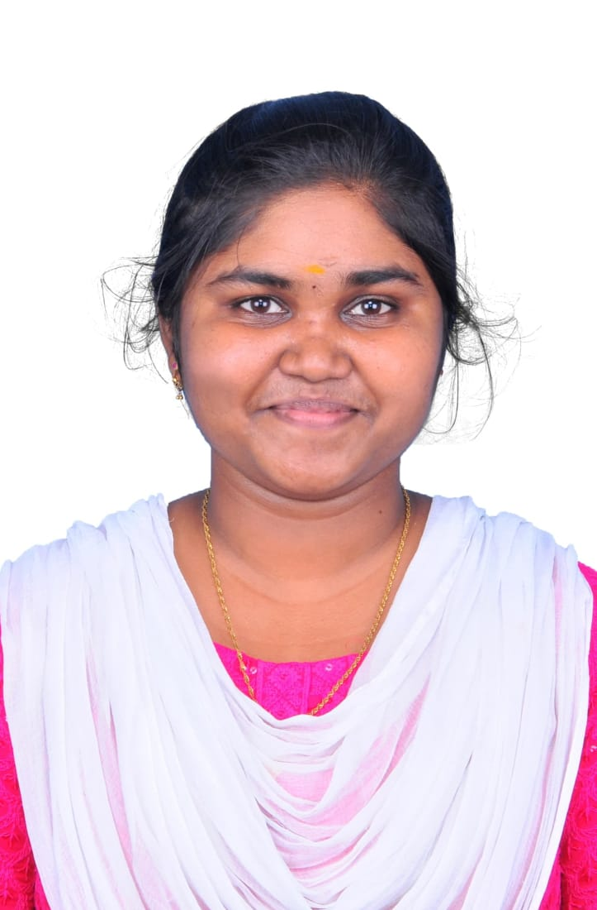

-> Python Backend Developer with hands-on experience building web applications using Python, Django, FastAPI, and SQL.
-> Skilled in REST API development, backend system design, debugging, and database-driven applications.
-> Focused on building reliable backend systems and optimizing application performance.
I am a Python Backend Developer with hands-on experience in building web applications using Python, Django, FastAPI, SQL, HTML, CSS, and JavaScript. I have experience developing REST APIs, authentication systems, and database-driven applications. Through internships and projects, I have worked on backend development, debugging, and workflow automation. I am passionate about building reliable backend systems and continuously improving my skills while contributing to real-world software development. I am eager to work in a professional environment where I can contribute responsibly, collaborate with teams, and grow as a developer while maintaining a disciplined and quality-focused approach to software development.
Tech Stack: Python, Django, SQLite, HTML, CSS, JavaScript
Tech Stack: Python, Django, MySQL, HTML, CSS, JavaScript
Duration: Oct 2023 - Dec 2023
Duration: Jan 2025 - Feb 2025
Bachelor’s in Electronics and Communication Engineering
Anna University – Francis Xavier Engineering College
CGPA: 7.5 / 10
2021 – 2025
Email: kaladevia2003@gmail.com
Phone: +91 9345776273
LinkedIn:https://www.linkedin.com/in/kala-devi-b70965310/
GitHub :https://github.com/Kaladevi03